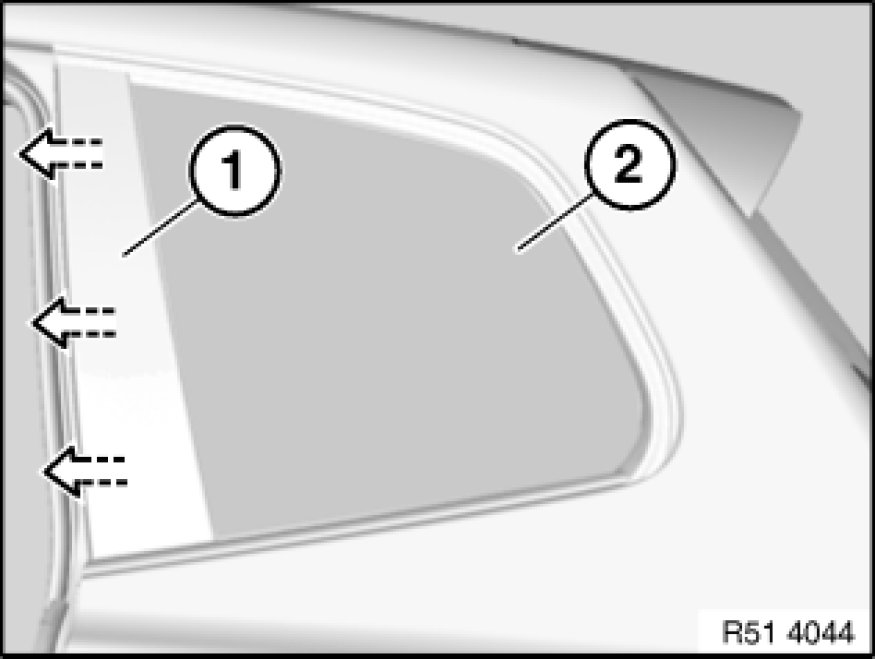
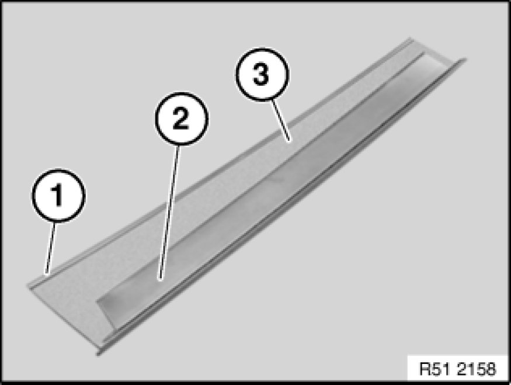

51 36 030 Removing and installing/replacing left or right trim on C-pillar (outside on rear side window)
51 36 030 - Removing and installing/replacing left or right trim on C-pillar (outside on rear side window)

Raise trim (1) at rear approx. 2 mm and pull off in stages by approx. 2 mm from top downwards from door window (2) in direction of arrow.

Installation:
Fold (1) and retaining lug (2) of trim (3) must not be bent up.